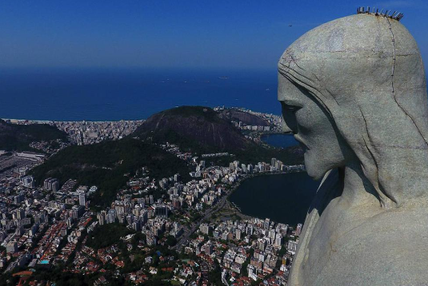

Maravillas del Mundo Moderno
Cristo Redentor
El Cristo Rendentor es una estatua de Jesús de Nazaret con los brazos abiertos mostrando a la Ciudad de Río de Janeiro, Brasil. La estatua tiene una altura de 30.1 metros sobre un pedestal de 8 metros. Este monumento fue inaugurado el 12 de Octubre de 1931, después de aproximadamente cinco años de construcción.
© Copyrigth 2021. Todos los derechos Reservados. Venezuela